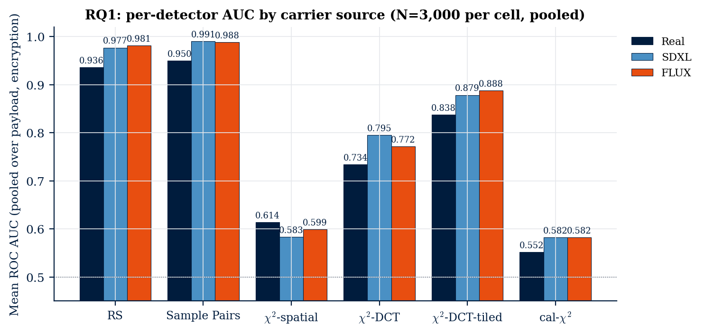
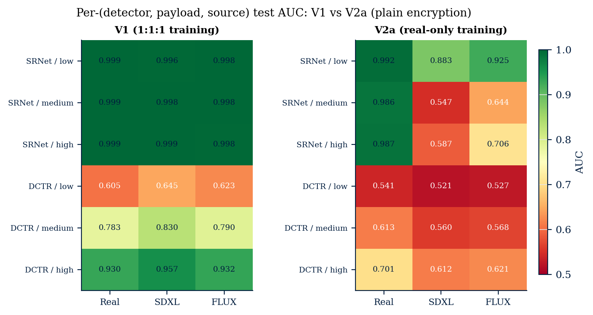

Three pictures of two elephants. To your eye they are identical. To a steganalyst, the 0.05 bpp payload in Image B touches 2.5% of the LSBs; the 0.30 bpp in Image C touches 15%. Both are undetectable by inspection but loud to the right test.
Five of six training-free detectors find diffusion carriers easier than real photographs. The pooled effect is small (|ΔAUC| ≈ 0.013), 3 to 7× larger in the operationally screened FPR ≤ 0.10 tail.

SRNet trained on a balanced real + AI corpus looks source-invariant. Trained on real photos only, it interprets diffusion-decoder noise as the LSB perturbation it was taught to detect. Cover-stego separation collapses on AI images.

Our tile-local χ2-DCT detector partitions the DCT-block grid into T×T disjoint tiles and runs Westfeld's pairs-of-values test in each. It beats the textbook global baseline on BOSSBase 1.01 at both quality factors.
| Q | Embedder | global | tile-local | Δ |
|---|---|---|---|---|
| 75 | JSteg | 0.764 | 0.854 | +0.090 |
| 95 | JSteg | 0.816 | 0.902 | +0.086 |
| 75 | OutGuess | 0.502 | 0.500 | −0.002 |
| 95 | OutGuess | 0.507 | 0.507 | 0.000 |